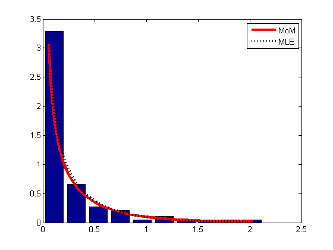

function gammaRainfallDemo()
X = dlmread('rainfallData.txt');
X = X'; X = X(:);
X = X(1:end-5);
[a(1), b(1)] = gamMOM(X);
[a(2), b(2)] = gamMLE(X);
[v, binc] = hist(X);
h = binc(2)-binc(1);
N = length(X);
areaH = h*N;
figure(1);clf;bar(binc, v/areaH);hold on
xs = linspace(0.05, binc(end));
linestyles = {'r-', 'k:'};
for i=1:2
ps = gampdf(xs, a(i), 1/b(i));
h(i) = plot(xs, ps, linestyles{i}, 'linewidth', 3);
end
legend(h, 'MoM', 'MLE')
printPmtkFigure('rainfallDemo');
end
function [a,b] = gamMLE(X)
params = gamfit(X);
a = params(1);
b = 1/params(2);
end
function [a,b] = gamMOM(X)
xbar = mean(X);
s2hat = var(X);
a = xbar^2/s2hat;
b = xbar/s2hat;
end
